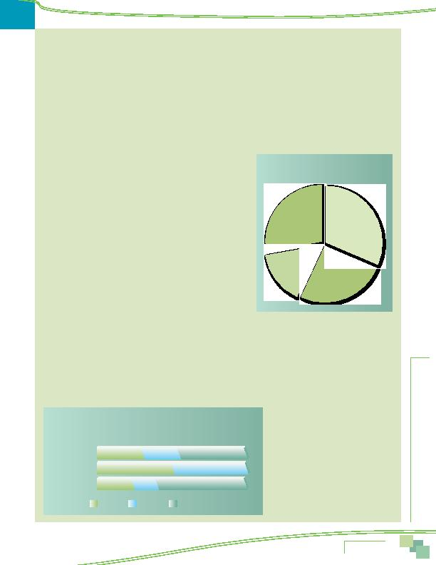

MWCOG-Comm
uter Conn
ecti
on
s-- 2010 State o
f th
e Comm
ute Report
5 1
Sources of Telecommute Information
Respondents who telecommuted were asked how they had learned about telecommuting and if they had received telecommute
information from Commuter Connections or MWCOG, either from Commuter Connections or from an MWCOG web site. The most
frequently mentioned sources are shown in Figure 44.
The largest source of information, by far, was "special program at work/employer," named by seven in ten (71%) of respondents.
This percentage was considerably higher than in the 2007 survey, in which only 55% of telecommuters cited their employer as the
source of information and higher still compared with the 34% who gave this answer in 2004.
Fifteen percent said they "initiated the request on their own" and five percent said they learned of telecommuting through
"word of mouth." Both had declined as telecommute information sources since 2007, when they were named by 23% and 13%,
respectively
Six percent of telecommuters said they received telecommute information directly from Commuter Connections or MWCOG. This
was about the same percentage as mentioned Commuter Connections/MWCOG in each of the previous three SOC surveys: 2007 (7%),
2004 (5%), and 2001 (5%).
TELECOMMUTE PATTERNS
Respondents who said they telecommuted, at least occasionally, were
asked a series of questions about their telecommute characteristics including:
length of time telecommuting, use of informal or formal telecommute arrange-
ment, telecommute location, frequency of telecommuting, and access mode to
telework locations outside the home.
Length of Time Telecommuting
As illustrated in Figure 45, approximately four in ten (38%) respondents
who telecommuted started telecommuting within the past two years and 16%
started within the past year. Three in ten (29%) said they had been telecom-
muting more than five years. On average, respondents had been telecommuting
about 56 months. This was a slightly longer duration than had been estimated
in 2007 (53 months) and considerably longer than the 42 months average
measured in the 2004 SOC survey. In the 2004 SOC survey, nearly half (49%) of
telecommuters started telecommuting within the past two years and only 19%
said they had been telecommuting more than five years.
Formal or Informal Telecommute Arrangement
Telecommuters were asked if they telecommuted under a formal program or through an informal arrangement with a supervisor.
Respondents who did not telecommute were asked if their employer had a telecommute program, even though the respondent did
not use it.
As shown in Figure 46, 54% of respondents said their employers allowed some telecommuting, either under a formal program
(29%) or an informal arrangement (25%). Slightly less than half (46%) of respondents said their employers did not have any
telecommute program or that they didn't know about any program.
Figure 46 also presents the distribution of telecommuting availability among respondents who currently telecommuted
and those who did not. Telecommuters were much more likely than were other respondents to work for an employer with a
formal telecommute program. Half of
telecommuters said they telecommuted
under a formal arrangement and the other
half telecommuted under an informal
arrangement with their supervisor.
By contrast, only 22% of non-
telecommuters said their employers had
a formal telecommute program and 17%
said telecommuting was permitted under
informal arrangements. More than six
in ten (61%) said the employer had
no program or they didn't know if a
program existed.
Figure 45
Length of Time Telecommuting
25-60 months
33%
12-24 months
22%
More than
5 years
29%
Less than
one year
16%
Figure 46
Formal or Informal Telecommute Arrangements
All respondents and Telecommuters vs Non-Telecommuters
29%
25%
50%
50%
22%
61%
All workers
Telecommuters
Non-telecommuters
46%
0%
17%
Formal
Informal
No Program
Telecommuting